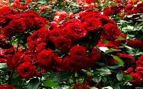
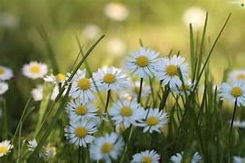
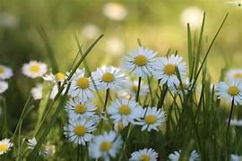

Popular Flowers
- 🌹 Roses - Symbol of love and beauty
- 🌻 Sunflowers - Bright and cheerful
- 🌷 Tulips - Elegant and colorful
- 🌸 Orchids - Exotic and graceful
- 🌼 Daisies - Simple and charming
Flower Gallery




Learn More About Flowers
Explore the meaning of different flowers at Flower Meaning.
Discover different flower species at Gardening Know How.